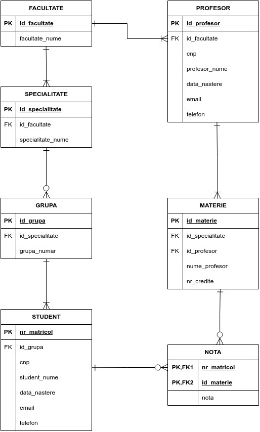

Descriere
Aplicatia web este dedicata gestionării activităților universitare reprezintand o platformă esențială, oferind o soluție eficientă pentru administrarea și monitorizarea informațiilor legate de studenți, profesori, cursuri și note. Acest website, denumit oferă o serie de caracteristici și funcționalități cheie pentru a simplifica procesele academice și pentru a aduce avantaje atât pentru elevi, cât și pentru cadrele didactice și personalul administrativ.
Utilitati
- Bază de date completă cu informații detaliate despre toți studenții si profesorii înregistrați
- Actualizarea si monitorizarea usoara a datelor si a rezultatelor obtinute la examene
- informații suplimentare despre cursuri
- Clasificarea studentilor pe speccializari si grupe
Utilizatori
- Admin
- Toate drepturile: inserarea, modificarea, stergerea datelor din baza de date
- Profesor
- Inserarea sau modificarea notelor studentilor
- Vizualizarea notelor doar pentru cursurile care preda
- Student
- Vizualizarea notelor personale din tabel
Diagrama conceputala
